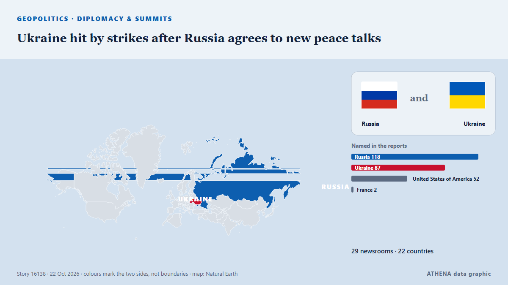

Ukraine hit by strikes after Russia agrees to new peace talks

The three waves of Russian missiles were launched at hours after Russia said it was "ready in principle" to resume peace talks with the US and Ukraine. de BBC News
Relayé de façon indépendante par 29 médias dans 22 pays depuis le 21 oct. ; premier à l'annoncer : RTÉ News ; la couverture est à son pic. ATHENA juge le risque élevé (7.2/10), surtout en raison de la gravité des dommages décrits et de sa portée géographique et sectorielle. La confiance est de 93 % (élevée) : 29 médias indépendants le confirment, avec une fiabilité moyenne des sources de 76 %. Qui l'a rapporté : 4 médias en Royaume-Uni · United Kingdom, 3 médias en Ukraine, 3 médias en Russie · Russia. La couverture s'est étendue de 21 oct. à 22 oct., sur 36 heures.
Pourquoi c'est important: L'invasion à grande échelle de l'Ukraine par la Russie a commencé en février 2022. Ce suivi couvre les combats, les frappes sur les infrastructures et la diplomatie autour de la guerre, selon la presse du monde entier.
Ce qui a changé : 30 nouveaux articles de 24 rédactions dans les 24 heures jusqu'au 22 oct..
Les titres sont affichés en anglais, tels que publiés.
En un coup d'œil
Sélectionné, noté et rédigé par la méthodologie publiée d'ATHENA. Aucun rédacteur n'intervient sur un événement en particulier. Comment il est produit ›
| 21 Oct 05:31 UTC | 2 |
|---|---|
| 21 Oct 07:31 UTC | 0 |
| 21 Oct 09:31 UTC | 0 |
| 21 Oct 11:31 UTC | 2 |
| 21 Oct 13:31 UTC | 0 |
| 21 Oct 15:31 UTC | 1 |
| 21 Oct 17:31 UTC | 2 |
| 21 Oct 19:31 UTC | 8 |
| 21 Oct 21:31 UTC | 2 |
| 21 Oct 23:31 UTC | 1 |
| 22 Oct 01:31 UTC | 3 |
| 22 Oct 03:31 UTC | 2 |
| 22 Oct 05:31 UTC | 5 |
| 22 Oct 07:31 UTC | 2 |
| 22 Oct 09:31 UTC | 2 |
| 22 Oct 11:31 UTC | 0 |
| 22 Oct 13:31 UTC | 1 |
| 22 Oct 15:31 UTC | 1 |
| 22 Oct 17:31 UTC | 1 |
Pourquoi ces chiffres
Importance
Risque
Confiance
La couverture : qui l'a annoncé, et quand
titre tel que publié · ouvre l'original- RTÉ News · Irlande · IrelandPutin agrees to resume trilateral talks on Ukraine war
- Asharq Al-Awsat (English) · Arabie saoudite · Saudi ArabiaPutin Agrees to Resume Three-Way Talks on Ukraine War with Kyiv and Washington, Kremlin Says
- Kyiv Post · Ukraine‘Ukraine’s Capitulation Not an Option’ – Merz Backs Kyiv in Peace Talks
- The Moscow Times · Russie · RussiaPutin Releases American Jailed in Russia, Agrees to Trilateral Peace Talks as Witkoff Visits
- Ukrainska Pravda (English) · UkraineAxios: Ukraine and Russia accept proposal to resume trilateral talks
- Kyiv Independent · UkraineUkraine war latest: Zelensky supports resuming trilateral peace talks with US, Russia after Putin claims Kremlin readiness
- APA (English) · Azerbaïdjan · AzerbaijanKyiv hopes for talks with US, Russia by 'early November'
- France 24 English · FrancePutin agrees to resume three-way talks with Kyiv and Washington
- The Straits Times · Singapour · SingaporeUkraine’s Zelensky hopes for new peace talks with Russia, US by early November
- Nile Post · Ouganda · UgandaRussia says it is ready to resume talks with Ukraine and US to end war
- BBC News · Royaume-Uni · United KingdomRosenberg: Russia agrees to Ukraine talks but sees little to talk about in new peace push
- Foreign Policy · États-Unis · United StatesWitkoff Pushes Putin to Restart Peace Talks
- Fortune · États-Unis · United StatesPutin agrees ‘in principle’ to resume talks with Washington and Kyiv to end war in Ukraine—but still isn’t ‘fully satisfied’ with proposals
- TASS (English) · Russie · RussiaRussia signals readiness to resume trilateral talks as Putin meets with US envoy
- BBC News · Royaume-Uni · United KingdomMissiles hit Kyiv after Russia agrees to US call to resume Ukraine peace talks
- APA (English) · Azerbaïdjan · AzerbaijanUS, Ukraine and Russia could hold new peace talks in November, Zelenskyy says
- APA (English) · Azerbaïdjan · AzerbaijanZelenskyy: Russia agrees to trilateral peace talks with US and Ukraine
- SBS News · Australie · AustraliaPutin agrees 'in principle' to revive trilateral talks with US and Ukraine
- France 24 English · FranceRussia and Ukraine trade strikes overnight as Moscow signals readiness for peace talks
- CGTN (World) · Chine · ChinaRussia and Ukraine agree to resume peace talks next month
- Business Recorder · PakistanPutin agrees to resume 3-way peace talks with Ukraine and US
- Politico Europe · Belgique · BelgiumWho speaks for Europe in the Ukraine peace talks?
- DW English · Allemagne · GermanyUkraine, Russia trade strikes after Witkoff talks
- The Korea Times · Corée du Sud · South KoreaPutin agrees to resume 3-way talks with Kyiv and Washington
- Türkiye Today · Turquie · TurkeyZelenskyy calls for freezing Ukraine front lines as first step toward peace
- Korea Herald · Corée du Sud · South KoreaPutin agrees to resume 3-way peace talks with Ukraine and US
- The Daily Star — page reader · BangladeshPutin agrees to resume 3-way peace talks with Ukraine and US
- The Kathmandu Post · Népal · NepalPutin agrees to resume 3-way peace talks with Ukraine and US
- to vima · Grèce · GreecePutin Agrees to Resume Ukraine Peace Talks With US
- MyJoyOnline · GhanaMissiles hit Kyiv after Russia agrees to US call to resume Ukraine peace talks
- Al Jazeera English · QatarRussia and Ukraine trade attacks despite pledging to resume peace talks
- The Guardian · Royaume-Uni · United KingdomRussia bombards Kyiv with missiles hours after agreeing to resume talks with Ukraine
- France 24 English · FranceRussia agrees to resume trilateral peace talks on Ukraine war
- Meduza (English) · Russie · RussiaU.S., Russia, and Ukraine discuss resuming trilateral peace talks in November as missile and drone strikes continue
- BBC News · Royaume-Uni · United KingdomUkraine hit by strikes after Russia agrees to new peace talks